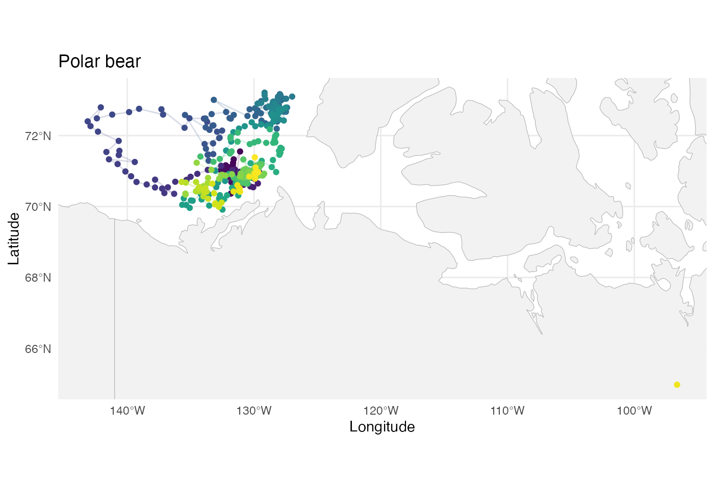
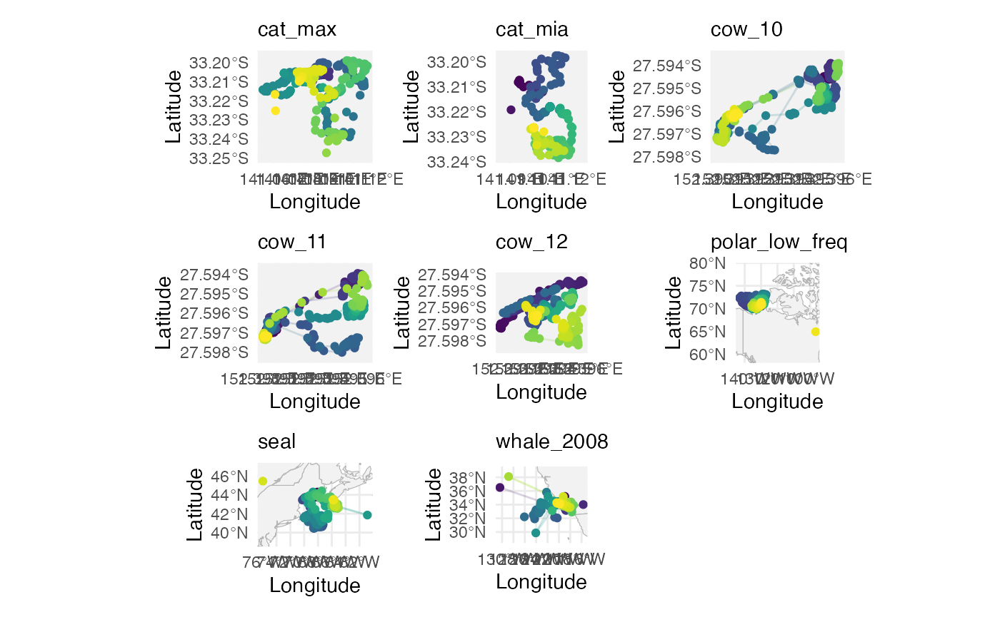

This page shows how the examples in section 3.1 of Shankar et al. (2025) are generated.
These examples all use the first-differenced correlated random walk (DCRW) model, a type of linear Gaussian SSM. This model is detailed in Auger-Méthé et al. (2021). The DCRW model has the following observation and state processes, where is the location observed by the satellite, is the error from the satellite measurements, is the true location of the whale, and captures the randomness in the whale’s movement. Both and are 2-dimensional vectors containing longitude and latitude coordinates. The DCRW model assumes that the whale’s location depends on the previous location , and the previous direction and speed of movement . The amount of dependence on is determined by the correlation parameter .
Notice the use of instead of for the state process; the DCRW model above is not in state-space form since the state process depends on the previous states, and . This presentation makes it easier to understand the model dynamics, but in order to estimate the parameters of the model, the model must be converted into state-space form.
We use a diagonal structure for the observation error variance matrix, allowing for different variances to be estimated for the longitude and the latitude directions, A similar matrix is used for the state error variance matrix .
Blue whale (2008)
whale_2008 = read_csv("data/Blue whales Eastern North Pacific 1993-2008 - Argos Data.csv") |>
# Standardise column names
janitor::clean_names() |>
# Keep only rows for the whale with ID "2008CA-Bmu-10839"
filter(individual_local_identifier == "2008CA-Bmu-10839") |>
# Replace missing values in 'manually_marked_outlier' with FALSE
mutate(manually_marked_outlier = tidyr::replace_na(manually_marked_outlier, FALSE)) |>
# Round timestamps to the nearest 12 hours
mutate(timestamp = lubridate::round_date(timestamp, "12 hours")) |>
# Within each group, keep only the last row (e.g. latest observation per 12-hour block)
group_by(timestamp) |>
slice_tail(n = 1) |>
# Convert the data to a tsibble object (time series tibble)
tsibble::tsibble() |>
# Fill in missing time points in the series with explicit gaps
tsibble::fill_gaps() |>
# Convert back to a regular tibble
as_tibble() |>
# Rename longitude/latitude columns to x and y
rename(x = location_long,
y = location_lat)Plot with world map data:
library(rnaturalearth)
library(rnaturalearthdata)
library(sf)
# Get country boundaries as an sf object
world <- ne_countries(scale = "medium", returnclass = "sf")
# Work out x/y ranges with some padding
x_range <- range(whale_2008$x, na.rm = TRUE)
y_range <- range(whale_2008$y, na.rm = TRUE)
x_pad <- diff(x_range) * 0.05 # 5% padding
y_pad <- diff(y_range) * 0.05 # 5% padding
whale_2008 %>%
ggplot() +
# Country boundaries
geom_sf(data = world, fill = "grey95", colour = "grey70", size = 0.3) +
# Whale track and points
geom_path(aes(x = x, y = y, colour = timestamp), alpha = 0.2) +
geom_point(aes(x = x, y = y, colour = timestamp)) +
# Colour scale
viridis::scale_color_viridis() +
# Focus map on whale’s range
coord_sf(
xlim = c(x_range[1] - x_pad, x_range[2] + x_pad),
ylim = c(y_range[1] - y_pad, y_range[2] + y_pad),
expand = FALSE
) +
# Labels and theme
labs(x = "Longitude", y = "Latitude", subtitle = "whale_2008") +
theme_minimal() +
theme(legend.position = "none")
Polar bear
polar_low_freq = read_csv("data/PB_Argos.csv") %>%
# Standardise column names
clean_names() %>%
# Convert date_time column to a proper datetime object called 'timestamp'
mutate(timestamp = ymd_hms(date_time)) %>%
# Drop the original date_time column
select(-date_time) %>%
# Round timestamps to the nearest day
mutate(timestamp = lubridate::round_date(timestamp, "1 day")) %>%
# Within each group, keep only the first row (e.g. earliest observation per day)
group_by(timestamp) %>%
slice_head(n = 1) %>%
# Convert timestamp to a Date object (drop time-of-day information)
mutate(timestamp = as.Date(timestamp)) %>%
# Convert the data to a tsibble object (time series tibble)
tsibble::tsibble() %>%
# Fill in missing time points in the series with explicit gaps
tsibble::fill_gaps() %>%
# Convert back to a regular tibble
as_tibble() %>%
# Rename longitude/latitude columns to x and y
rename(x = lon,
y = lat)Seal
seal = read_csv("data/sealLocs.csv") %>%
# Keep only rows for the seal with ID "stephanie"
filter(id == "stephanie") %>%
# Round timestamps to the nearest day
mutate(timestamp = lubridate::round_date(time, "1 day")) %>%
# Within each group, keep only the last row (e.g. latest observation per day)
group_by(timestamp) %>%
slice_tail(n = 1) %>%
# Convert timestamp to a Date object (drop time-of-day information)
mutate(timestamp = as.Date(timestamp)) %>%
# Convert the data to a tsibble object indexed by timestamp
tsibble::tsibble(index = timestamp) %>%
# Fill in missing time points in the series with explicit gaps
tsibble::fill_gaps() %>%
# Convert back to a regular tibble
as_tibble() %>%
# Rename longitude/latitude columns to x and y
rename(x = lon,
y = lat)Cats
cat_mia = read_csv("data/Feral cat (Felis catus) - Scotia, NSW.csv") %>%
clean_names() %>%
mutate(algorithm_marked_outlier = ifelse(is.na(algorithm_marked_outlier),
FALSE,
algorithm_marked_outlier),
manually_marked_outlier = ifelse(is.na(manually_marked_outlier),
FALSE,
manually_marked_outlier),
outlier = algorithm_marked_outlier | manually_marked_outlier) %>%
filter(individual_local_identifier == "Mia_FC642") %>%
mutate(timestamp = lubridate::round_date(timestamp, "20 minutes")) %>%
tsibble::tsibble() %>%
tsibble::fill_gaps() %>%
slice(-(1:19)) %>%
as_tibble() %>%
rename(x = location_long,
y = location_lat)
cat_max = read_csv("data/Feral cat (Felis catus) - Scotia, NSW.csv") %>%
clean_names() %>%
mutate(algorithm_marked_outlier = ifelse(is.na(algorithm_marked_outlier),
FALSE,
algorithm_marked_outlier),
manually_marked_outlier = ifelse(is.na(manually_marked_outlier),
FALSE,
manually_marked_outlier),
outlier = algorithm_marked_outlier | manually_marked_outlier) %>%
filter(individual_local_identifier == "Max_MC629") %>%
mutate(timestamp = lubridate::round_date(timestamp, "20 minutes")) %>%
tsibble::tsibble() %>%
tsibble::fill_gaps() %>%
slice(-(1:24)) %>%
as_tibble() %>%
rename(x = location_long,
y = location_lat)Cows
cow = read_csv("data/export_UQ_GPS.csv") %>%
clean_names() %>%
filter(partition_key == "70741400000EB036") %>%
# The cow data longitude and latitude are swapped! So we set x to be latitude and y to be longitude:
rename(x = latitude,
y = longitude) %>%
mutate(date = date(timestamp)) %>%
select(date, timestamp, x, y) %>%
group_by(date) %>%
mutate(diff = c(2.38, diff(timestamp))) %>%
mutate(missing_rows = map(diff, ~ seq_len(round(. / 2.38)))) %>%
unnest(missing_rows) %>%
mutate(x = ifelse(missing_rows > 1, NA, x),
y = ifelse(missing_rows > 1, NA, y)) %>%
ungroup() %>%
rename(x = x,
y = y)
cow_10 = cow %>% filter(date == "2024-11-10")
cow_11 = cow %>% filter(date == "2024-11-11")
cow_12 = cow %>% filter(date == "2024-11-12")Collate data sets into a list
data_sets = list(
"cat_max" = cat_max,
"cat_mia" = cat_mia,
"cow_10" = cow_10,
"cow_11" = cow_11,
"cow_12" = cow_12,
"polar_low_freq" = polar_low_freq,
"seal" = seal,
# "whale_1994" = whale_1994,
# "whale_1995" = whale_1995,
"whale_2008" = whale_2008
)Summary of missingness proportion and size of data sets
data_sets %>%
map_dbl(~ mean(is.na(.$x))) %>%
round(2) %>%
as_tibble(rownames = "data_set") %>%
rename(proportion_missing = value) %>%
mutate(n = data_sets %>% map_dbl(~ length(.$x))) %>%
arrange(data_set) %>%
knitr::kable()| data_set | proportion_missing | n |
|---|---|---|
| cat_max | 0.27 | 927 |
| cat_mia | 0.27 | 342 |
| cow_10 | 0.09 | 603 |
| cow_11 | 0.07 | 604 |
| cow_12 | 0.07 | 601 |
| polar_low_freq | 0.09 | 366 |
| seal | 0.15 | 234 |
| whale_2008 | 0.17 | 122 |
Plot data sets on world map
# Get country boundaries as an sf object
world <- ne_countries(scale = "medium", returnclass = "sf")
plots = list()
for (i in 1:length(data_sets)) {
# Work out x/y ranges with some padding
x_range <- range(data_sets[[i]]$x, na.rm = TRUE)
y_range <- range(data_sets[[i]]$y, na.rm = TRUE)
x_pad <- max(diff(y_range) - diff(x_range), 0) / 2 + diff(x_range) * 0.05
y_pad <- max(diff(x_range) - diff(y_range), 0) / 6 + diff(y_range) * 0.05
plots[[i]] = data_sets[[i]] %>%
ggplot() +
# Country boundaries
geom_sf(data = world, fill = "grey95", colour = "grey70", size = 0.3) +
# Animal path and points
geom_path(aes(x = x, y = y, colour = timestamp), alpha = 0.2) +
geom_point(aes(x = x, y = y, colour = timestamp)) +
# Colour scale
viridis::scale_color_viridis() +
# Focus map on animal’s range
coord_sf(
xlim = c(x_range[1] - x_pad, x_range[2] + x_pad),
ylim = c(y_range[1] - y_pad, y_range[2] + y_pad),
expand = FALSE
) +
# Labels and theme
labs(x = "Longitude", y = "Latitude", subtitle = names(data_sets)[i]) +
theme_minimal() +
theme(legend.position = "none")
}
wrap_plots(plots) + plot_layout(ncol = 3)
Fit models using ROAMS and classical methods
The last 10% of points from each data set are left out to use as a ‘test set’ later on.
results = read_rds("data/results.rds")
results = tibble(
name = character(),
data_set = list(),
y_train = list(),
y_oos = list(),
classical = list(),
roams = list(),
classical_oos = list(),
roams_oos = list()
)
for (i in 1:length(data_sets)) {
y_all = data_sets[[i]] %>%
select(x, y) %>%
as.matrix()
n = nrow(y_all)
n_train = round(0.9*n) # 90%/10% train/test split
n_oos = n - n_train
y_train = y_all[1:n_train,]
y_oos = y_all[(n_train+1):n,]
var_est = c(mad(diff(y_train[,1]), na.rm = TRUE)^2,
mad(diff(y_train[,2]), na.rm = TRUE)^2)
build_fn = function(parm) {
phi_coef = parm[1]
Phi = diag(c(1+phi_coef, 1+phi_coef, 0, 0))
Phi[1,3] = -phi_coef
Phi[2,4] = -phi_coef
Phi[3,1] = 1
Phi[4,2] = 1
A = diag(4)[1:2,]
Q = diag(c(parm[2], parm[3], 0, 0))
R = diag(c(parm[4], parm[5]))
x0 = c(y_train[1,], y_train[1,])
P0 = diag(rep(0, 4))
specify_SSM(
state_transition_matrix = Phi,
state_noise_var = Q,
observation_matrix = A,
observation_noise_var = R,
init_state_mean = x0,
init_state_var = P0)
}
model_classical = classical_SSM(
y = y_train,
init_par = c(0.5, var_est, var_est),
build = build_fn,
lower = c(0, rep(1e-12, 4)),
upper = c(1, rep(Inf, 4)),
)
model_roams = robularized_SSM(
y = y_train,
init_par = c(0.5, var_est, var_est),
build = build_fn,
num_lambdas = 20,
cores = 4,
lower = c(0, rep(1e-12, 4)),
upper = c(1, rep(Inf, 4)),
B = 50
)
model_classical = attach_insample_info(model_classical)
model_roams_best = best_BIC_model(model_roams)
model_roams_best = attach_insample_info(model_roams_best)
# Out-of-sample metrics
# Re-create build function with different initial state mean
build_oos_fn = function(par) {
phi_coef = par[1]
Phi = diag(c(1+phi_coef, 1+phi_coef, 0, 0))
Phi[1,3] = -phi_coef
Phi[2,4] = -phi_coef
Phi[3,1] = 1
Phi[4,2] = 1
A = diag(4)[1:2,]
Q = diag(c(par[2], par[3], 0, 0))
R = diag(c(par[4], par[5]))
# Some data sets have first few out-of-sample timepoints missing, so get use first non-missing timepoint to initialise
first_complete_obs = which(!is.na(y_oos[,1]))[1]
x0_oos = c(y_oos[first_complete_obs,],
y_oos[first_complete_obs,])
P0 = diag(rep(0, 4))
specify_SSM(
state_transition_matrix = Phi,
state_noise_var = Q,
observation_matrix = A,
observation_noise_var = R,
init_state_mean = x0_oos,
init_state_var = P0)
}
classical_oos = oos_filter(
y_oos = y_oos,
model = model_classical,
build = build_oos_fn)
roams_oos = oos_filter(
y_oos = y_oos,
model = model_roams_best,
build = build_oos_fn)
results = results %>%
add_row(
name = names(data_sets)[i],
data_set = list(data_sets[[i]]),
y_train = list(y_train),
y_oos = list(y_oos),
classical = list(model_classical),
roams = list(model_roams_best),
classical_oos = list(classical_oos),
roams_oos = list(roams_oos)
)
cat("Data set", i, "complete\n")
}
# Add column containing frequency of measurements for each data set
frequencies = c("20 minutes", "20 minutes", "2 minutes and 23 seconds", "2 minutes and 23 seconds", "2 minutes and 23 seconds", "1 day", "1 day", "12 hours")
results = results %>%
mutate(frequency = frequencies)
# readr::write_rds(results, "data/results.rds")Compute and summarise results
results %>%
mutate(
n = map_dbl(y_train, ~ nrow(.)),
n_complete = map_dbl(y_train, ~ sum(!is.na(.[,1]))),
n_oos = map_dbl(y_oos, ~ nrow(.)),
n_oos_complete = map_dbl(y_oos, ~ sum(!is.na(.[,1]))),
in_sample_detected = map2_dbl(roams, n_complete,
~ .x$prop_outlying * .y),
oos_detected = map_dbl(roams_oos,
~ sum(.$outliers_flagged)),
roams_phi = map_dbl(roams, ~ .$par[1]),
classical_phi = map_dbl(classical, ~ .$par[1]),
#roams_obs_var = map_dbl(roams, ~ sum(.$par[4:5])),
#roams_state_var = map_dbl(roams, ~ sum(.$par[2:3])),
roams_MSFE = map2_dbl(
roams_oos, y_oos,
function(roams_oos, y_oos) {
SFEs = rowSums((y_oos - roams_oos$predicted_observations)^2)
MSFE = mean(SFEs, na.rm = TRUE)
return(MSFE)
}
),
classical_MSFE = map2_dbl(
classical_oos, y_oos,
function(classical_oos, y_oos) {
SFEs = rowSums((y_oos - classical_oos$predicted_observations)^2)
MSFE = mean(SFEs, na.rm = TRUE)
return(MSFE)
}
),
roams_trimmed_MSFE_5perc = map2_dbl(
roams_oos, y_oos,
function(roams_oos, y_oos) {
SFEs = rowSums((y_oos - roams_oos$predicted_observations)^2)
num_trim = round(0.05 * length(SFEs))
ascending_SFEs = sort(na.omit(SFEs))
n_complete = length(ascending_SFEs)
trimmed_SFEs = ascending_SFEs[1:(n_complete - num_trim)]
trimmed_MSFE = mean(trimmed_SFEs)
return(trimmed_MSFE)
}
),
classical_trimmed_MSFE_5perc = map2_dbl(
classical_oos, y_oos,
function(classical_oos, y_oos) {
SFEs = rowSums((y_oos - classical_oos$predicted_observations)^2)
num_trim = round(0.05 * length(SFEs))
ascending_SFEs = sort(na.omit(SFEs))
n_complete = length(ascending_SFEs)
trimmed_SFEs = ascending_SFEs[1:(n_complete - num_trim)]
trimmed_MSFE = mean(trimmed_SFEs)
return(trimmed_MSFE)
}
),
roams_trimmed_MSFE_10perc = map2_dbl(
roams_oos, y_oos,
function(roams_oos, y_oos) {
SFEs = rowSums((y_oos - roams_oos$predicted_observations)^2)
num_trim = round(0.1 * length(SFEs))
ascending_SFEs = sort(na.omit(SFEs))
n_complete = length(ascending_SFEs)
trimmed_SFEs = ascending_SFEs[1:(n_complete - num_trim)]
trimmed_MSFE = mean(trimmed_SFEs)
return(trimmed_MSFE)
}
),
classical_trimmed_MSFE_10perc = map2_dbl(
classical_oos, y_oos,
function(classical_oos, y_oos) {
SFEs = rowSums((y_oos - classical_oos$predicted_observations)^2)
num_trim = round(0.1 * length(SFEs))
ascending_SFEs = sort(na.omit(SFEs))
n_complete = length(ascending_SFEs)
trimmed_SFEs = ascending_SFEs[1:(n_complete - num_trim)]
trimmed_MSFE = mean(trimmed_SFEs)
return(trimmed_MSFE)
}
),
roams_MSFE_clean = map2_dbl(
roams_oos, y_oos,
function(roams_oos, y_oos) {
clean_timepoints = which(roams_oos$outliers_flagged == 0)
SFEs = rowSums((y_oos - roams_oos$predicted_observations)^2)
MSFE_clean = mean(SFEs[clean_timepoints], na.rm = TRUE)
return(MSFE_clean)
}
),
classical_MSFE_clean = pmap_dbl(
list(classical_oos, roams_oos, y_oos),
function(classical_oos, roams_oos, y_oos) {
clean_timepoints = which(roams_oos$outliers_flagged == 0)
SFEs = rowSums((y_oos - classical_oos$predicted_observations)^2)
MSFE_clean = mean(SFEs[clean_timepoints], na.rm = TRUE)
return(MSFE_clean)
}
)
# roams_MedSFE = map2_dbl(
# roams_oos, y_oos,
# ~ median(rowSums((.y - .x$predicted_observations)^2),
# na.rm = TRUE)
# ),
# classical_MedSFE = map2_dbl(
# classical_oos, y_oos,
# ~ median(rowSums((.y - .x$predicted_observations)^2),
# na.rm = TRUE)
# )
) %>%
select(name, frequency, n, n_complete, n_oos, n_oos_complete,
in_sample_detected, oos_detected, roams_phi, classical_phi,
roams_MSFE:classical_MSFE_clean) %>%
knitr::kable()| name | frequency | n | n_complete | n_oos | n_oos_complete | in_sample_detected | oos_detected | roams_phi | classical_phi | roams_MSFE | classical_MSFE | roams_trimmed_MSFE_5perc | classical_trimmed_MSFE_5perc | roams_trimmed_MSFE_10perc | classical_trimmed_MSFE_10perc | roams_MSFE_clean | classical_MSFE_clean |
|---|---|---|---|---|---|---|---|---|---|---|---|---|---|---|---|---|---|
| cat_max | 20 minutes | 834 | 612 | 93 | 63 | 0 | 4 | 0.5928195 | 0.5928195 | 0.0000156 | 0.0000089 | 0.0000029 | 0.0000013 | 0.0000012 | 0.0000009 | 0.0000131 | 0.0000089 |
| cat_mia | 20 minutes | 308 | 224 | 34 | 25 | 1 | 3 | 0.4381594 | 0.3527760 | 0.0000141 | 0.0000083 | 0.0000097 | 0.0000041 | 0.0000074 | 0.0000027 | 0.0000099 | 0.0000059 |
| cow_10 | 2 minutes and 23 seconds | 543 | 489 | 60 | 58 | 3 | 1 | 0.5527693 | 0.3610057 | 0.0000000 | 0.0000000 | 0.0000000 | 0.0000000 | 0.0000000 | 0.0000000 | 0.0000000 | 0.0000000 |
| cow_11 | 2 minutes and 23 seconds | 544 | 500 | 60 | 60 | 2 | 0 | 0.6434862 | 0.5941739 | 0.0000000 | 0.0000000 | 0.0000000 | 0.0000000 | 0.0000000 | 0.0000000 | 0.0000000 | 0.0000000 |
| cow_12 | 2 minutes and 23 seconds | 541 | 506 | 60 | 54 | 2 | 3 | 0.4101669 | 0.3458140 | 0.0000003 | 0.0000001 | 0.0000000 | 0.0000000 | 0.0000000 | 0.0000000 | 0.0000002 | 0.0000000 |
| polar_low_freq | 1 day | 329 | 304 | 37 | 28 | 26 | 3 | 0.5956271 | 0.6073569 | 44.6755463 | 98.2588415 | 0.2411263 | 1.0475820 | 0.1303176 | 0.6159222 | 0.3056231 | 60.5924109 |
| seal | 1 day | 211 | 190 | 23 | 8 | 1 | 1 | 0.4337738 | 0.4988243 | 15.4040433 | 21.9564892 | 0.1425846 | 8.3183182 | 0.0400377 | 1.9435781 | 0.1425846 | 8.3183182 |
| whale_2008 | 12 hours | 110 | 90 | 12 | 11 | 10 | 1 | 0.4319763 | 0.7861423 | 0.4815474 | 0.7160552 | 0.1973584 | 0.4799107 | 0.1973584 | 0.4799107 | 0.1973584 | 0.4799107 |
Plot out-of-sample squared forecast errors
results %>%
mutate(
classical_SFEs = map2(
classical_oos, y_oos,
function(classical_oos, y_oos) {
SFEs = rowSums((y_oos - classical_oos$predicted_observations)^2)
SFEs = na.omit(SFEs)
return(SFEs)
}
),
roams_SFEs = map2(
roams_oos, y_oos,
function(roams_oos, y_oos) {
SFEs = rowSums((y_oos - roams_oos$predicted_observations)^2)
SFEs = na.omit(SFEs)
return(SFEs)
}
)
) %>%
select(name, classical_SFEs, roams_SFEs) %>%
pivot_longer(c(classical_SFEs, roams_SFEs),
names_to = "method", values_to = "SFE") %>%
mutate(method = stringr::word(method, start = 1, end = 1, sep = "_")) %>%
unnest_longer(SFE) %>%
ggplot() +
aes(x = method, y = SFE, colour = name) +
geom_boxplot() +
facet_wrap(~ name, scales = "free") +
theme_bw() +
theme(legend.position = "none")Plot in-sample fit
plots = list()
for (i in 1:length(data_sets)) {
# Work out x/y ranges with some padding
x_range <- range(data_sets[[i]]$x, na.rm = TRUE)
y_range <- range(data_sets[[i]]$y, na.rm = TRUE)
x_pad <- max(diff(y_range) - diff(x_range), 0) / 2 + diff(x_range) * 0.05
y_pad <- max(diff(x_range) - diff(y_range), 0) / 6 + diff(y_range) * 0.05
result = results %>%
slice(i)
fitted_paths = tibble(
x_roams = result$roams[[1]]$smoothed_observations[,1],
y_roams = result$roams[[1]]$smoothed_observations[,2],
x_classical = result$classical[[1]]$smoothed_observations[,1],
y_classical = result$classical[[1]]$smoothed_observations[,2]
)
detected_outliers = which(rowSums(abs(result$roams[[1]]$gamma)) != 0)
plots[[i]] = data_sets[[i]] %>%
# Retain in-sample data points
slice(1:round(0.9*n())) %>%
ggplot() +
# Country boundaries
geom_sf(data = world, fill = "grey95", colour = "grey70", size = 0.3) +
# Animal path and points
geom_point(aes(x = x, y = y), alpha = 0.3) +
geom_path(data = fitted_paths,
aes(x = x_classical,
y = y_classical), colour = "royalblue") +
geom_path(data = fitted_paths,
aes(x = x_roams,
y = y_roams), colour = "orange") +
geom_point(data = data_sets[[i]] %>%
slice(1:round(0.9*n())) %>%
slice(detected_outliers),
aes(x = x, y = y),
colour = "orange", size = 2, stroke = 1, pch = 1) +
# Focus map on animal’s range
coord_sf(
xlim = c(x_range[1] - x_pad, x_range[2] + x_pad),
ylim = c(y_range[1] - y_pad, y_range[2] + y_pad),
expand = FALSE
) +
# Labels and theme
labs(x = "Longitude", y = "Latitude", subtitle = names(data_sets)[i]) +
theme_minimal() +
theme(legend.position = "none")
}
wrap_plots(plots) + plot_layout(ncol = 3)
Plot one-step-ahead out-of-sample predictions
plots = list()
for (i in 1:length(data_sets)) {
# Work out x/y ranges with some padding
x_range <- range(data_sets[[i]]$x, na.rm = TRUE)
y_range <- range(data_sets[[i]]$y, na.rm = TRUE)
x_pad <- max(diff(y_range) - diff(x_range), 0) / 2 + diff(x_range) * 0.05
y_pad <- max(diff(x_range) - diff(y_range), 0) / 6 + diff(y_range) * 0.05
result = results %>%
slice(i)
oos_paths = tibble(
x_roams = result$roams_oos[[1]]$predicted_observations[,1],
y_roams = result$roams_oos[[1]]$predicted_observations[,2],
x_classical = result$classical_oos[[1]]$predicted_observations[,1],
y_classical = result$classical_oos[[1]]$predicted_observations[,2]
)
detected_outliers = which(result$roams_oos[[1]]$outliers_flagged == 1)
plots[[i]] = data_sets[[i]] %>%
# Retain in-sample data points
slice((round(0.9*n()) + 1) : n()) %>%
ggplot() +
# Country boundaries
geom_sf(data = world, fill = "grey95", colour = "grey70", size = 0.3) +
# Animal path and points
geom_point(aes(x = x, y = y), alpha = 0.3) +
geom_path(data = oos_paths,
aes(x = x_classical,
y = y_classical), colour = "royalblue") +
geom_path(data = oos_paths,
aes(x = x_roams,
y = y_roams), colour = "orange") +
geom_point(data = data_sets[[i]] %>%
slice((round(0.9*n()) + 1) : n()) %>%
slice(detected_outliers),
aes(x = x, y = y),
colour = "orange", size = 2, stroke = 1, pch = 1) +
# Focus map on animal’s range
coord_sf(
xlim = c(x_range[1] - x_pad, x_range[2] + x_pad),
ylim = c(y_range[1] - y_pad, y_range[2] + y_pad),
expand = FALSE
) +
# Labels and theme
labs(x = "Longitude", y = "Latitude", subtitle = names(data_sets)[i]) +
theme_minimal() +
theme(legend.position = "none")
}
wrap_plots(plots) + plot_layout(ncol = 3)